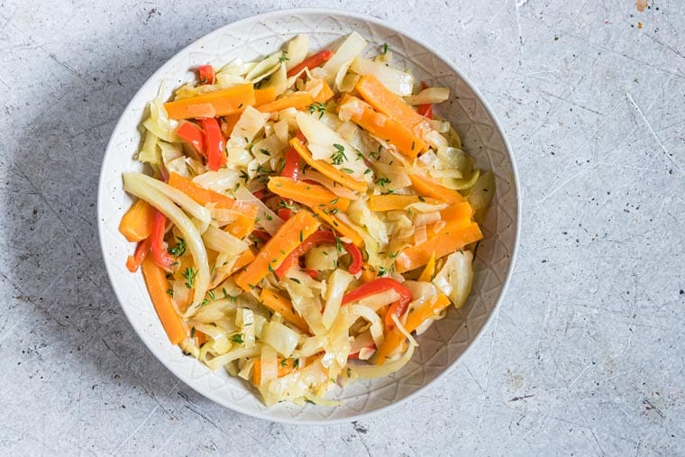

Home
Jamaican Steamed Cabbage

How To Steam Cabbage Jamaican Style
Jamaicans have a unique way of doing things when it comes to cooking.
We know how to make food taste good in a way you'll never experience anywhere else in the world,
unless ofcourse, a Jamaican chef cooked it. Below you'll find the ingredients and steps on how to prepare Steamed Cabbage the Jamaican way.
Lets dive in!
Ingredients
- Cabbage
- Carrots
- Thyme
- Onions
- Sweet pepper
- Garlic
- Scotch bonnet chilli pepper
Steps
- Heat coconut oil in a saucepan, add onion and thyme and cook for about 5-7 minutes till soft.
- Stir in garlic, followed by cabbage, peppers, carrots, scotch bonnet if using, vegetable broth and salt.
- Mix well, cover, reduce heat and steam for between 10-15 minutes or until done to your preference.